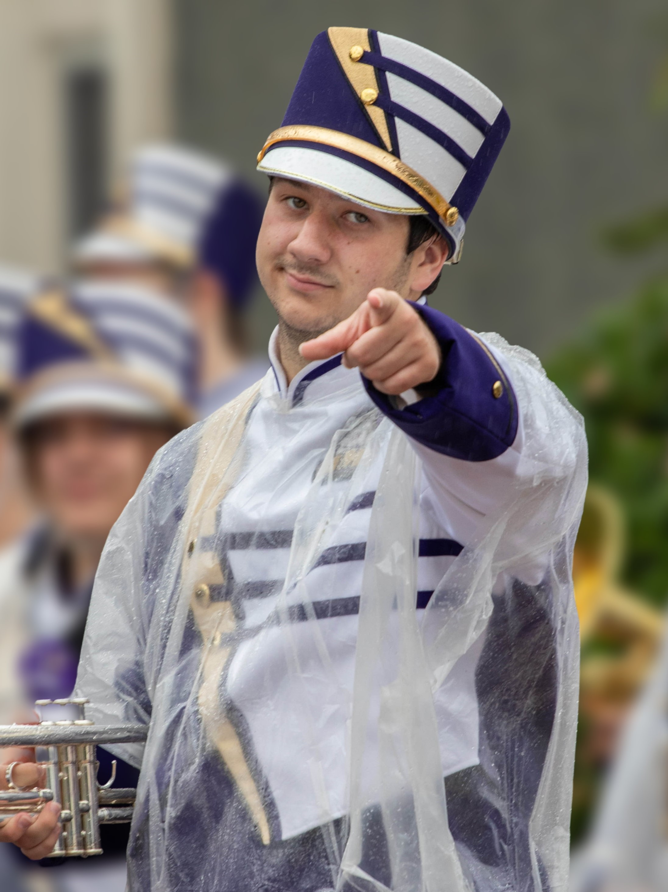

I'm Dalton Bowling
A Computer Science major at James Madison University with minors in Music and Mathematics. I began programming in 2022 and have experience with Python, Java, C, JavaScript, HTML, CSS, Ruby, Haskell, and Rust. I also maintain my own home server, which has helped me further develop my technical skills and curiosity outside the classroom.
